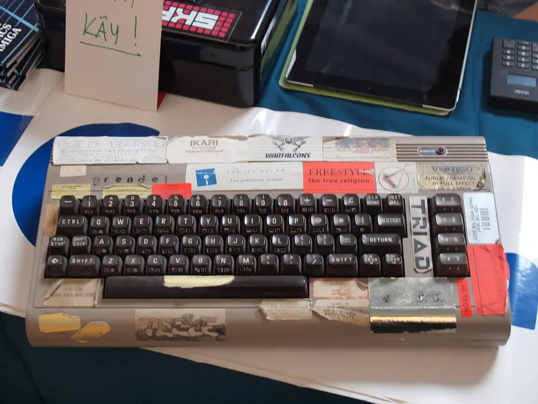

Computer Science · Foundations · Grades K–8
Binary, Bits & Logic Gates
Inside every computer, phone, and game console, there are no letters, colors, or numbers—only billions of microscopic switches flipping between 0 (OFF) and 1 (ON). Start with step-by-step robot instructions, then flip 8-bit binary cards, paint a bitmap sprite out of bits, and wire logic gates that make switches add numbers.
1. Unplugged Robot: Computers Do What You Say, Not What You Mean
Before we touch binary numbers or code, an algorithm is simply an exact list of steps. A robot has no common sense: if a step is missing or out of order, it walks into a crate! Build a sequence of arrows to guide the rover (🤖) to the battery (🔋), then test and debug your program.
Mission: Reach the battery at (col 5, row 1) without hitting crates (📦).
2. Eight Switches Make a Byte: The Binary Flip Cards
Humans count in base-10 (ones, tens, hundreds) because we have ten fingers. Computers count in base-2 (binary) because an electrical switch has two states: 0 (OFF) and 1 (ON). Each switch is a bit, and 8 bits together make 1 byte (values 0 to 255). Click any card below to flip its bit and watch how the powers of two add up.
3. Bits as Pictures: 8×8 Binary Sprite Painter
How do 0s and 1s become graphics? On an early 1-bit screen, each row of 8 pixels is stored as a single byte: 1 lights the pixel up, and 0 leaves it dark. Click squares in the 8×8 grid (or load a preset) and watch the computer encode each row into binary and decimal in real time.
| Row | 8-Bit Binary | Decimal | Hex |
|---|
4. Logic Gates: Teaching Switches to Think and Add
In 1854, mathematician George Boole showed that logical reasoning could be written as algebra with only TRUE (1) and FALSE (0). In 1937, Claude Shannon proved that electrical switches could execute Boole's rules—creating logic gates. Toggle Input A and Input B below, test each gate, and see how pairing an XOR gate with an AND gate builds a Binary Half-Adder that adds two bits in hardware!
Live Truth Table
Connection to AI: Notice how XOR outputs 1 only when Inputs A and B differ. In Perceptron Lab, you will see why a single-layer 1958 neural network can learn AND and OR, but needs multiple layers to solve XOR!
5. From Punched Cards to Silicon Transistors
Click any photograph to enlarge it in the classroom lightbox and examine how engineers physically represented 0 and 1 across two centuries.


0–255) at a time—just like the 8-bit flip cards and 8×8 sprite grid you used in Parts 2 and 3. Photo: JIP (CC BY-SA 3.0).